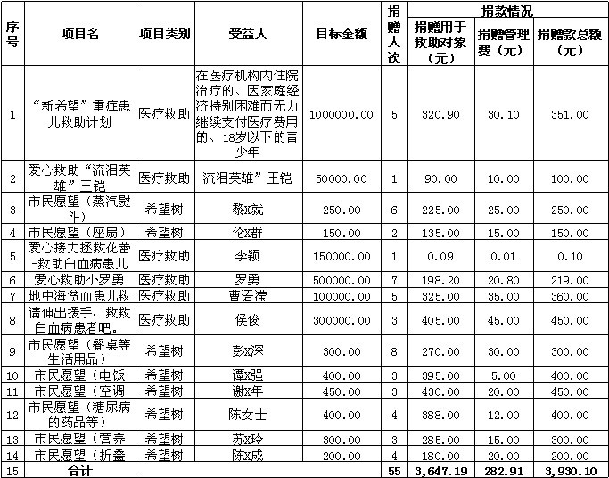

logo
关于开展V公益小额捐赠平台捐赠款第二期结算工作的公告
2014-08-30 08:57浏览次数：165次
敬爱的捐赠者：
感谢您对V公益小额捐赠平台各求助项目的爱心支持。日前，我会就2013年4月17日前的爱心捐款进行了结算，具体如下：
1、截止2013年4月17日，捐赠总额为3,930.1元，其中自愿捐赠用于管理分部分为282.91元，捐赠用于求助对象部分共3,647.19元（详见下表）。
2、截止2013年4月17日，共55人（次）参与捐赠，捐赠款涉及"'新希望'重症患儿救助计划、'爱心救助'流泪英雄'王铠、'爱心接力拯救花蕾-救助白血病患儿李颖'、'请伸出援手，救救白血病患者吧'、希望树市民愿望"等14个项目。
